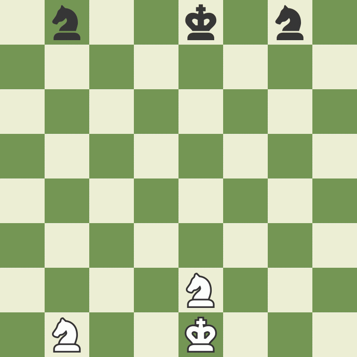

Étape 1. Préparer l’échiquier
Au début de la partie, l'échiquier est placé de manière à ce qu'une case blanche se trouve dans le coin inférieur droit du camp de chaque joueur.
Les pièces sont ensuite disposées de la même manière à chaque début de partie. La deuxième rangée (ou ligne) est occupée par les pions. Les tours occupent les coins, puis les cavaliers viennent à leur côté, suivis des fous, de la dame et enfin du roi, la dame devant se trouver sur une case de sa couleur (dame blanche sur case blanche, dame noire sur case noire).

Étape 2. Le déplacement des pièces
Chacune des 6 sortes de pièces se déplace différemment. Les pièces ne peuvent pas en traverser d’autres (bien que le cavalier puisse sauter par-dessus) et ne peuvent jamais partager une case avec une pièce de leur propre camp. En revanche, elles peuvent prendre la place d’une pièce adverse en la capturant. Le but du déplacement des pièces est de les mettre en position d’en capturer une autre (en atterrissant sur sa case et en la remplaçant), de défendre leurs alliées contre la capture, ou de contrôler des cases importantes.
Comment se déplace le roi
Bien que le roi soit la pièce la plus importante, c’est aussi l’une des plus faibles. Il ne peut bouger que d’une case dans n’importe quelle direction : vers le haut, vers le bas, sur le côté ou en diagonale. Le roi n’a pas le droit de se placer sur une case où il serait en échec (là où il pourrait être capturé). Quand une autre pièce l’attaque, cela s’appelle « échec au roi ».

Comment se déplace la dame
La dame est la pièce la plus forte. Elle peut se déplacer dans toutes les directions : vers l’avant, vers l’arrière, sur le côté ou en diagonale, aussi loin que le joueur le souhaite à condition de ne pas passer par-dessus d’autres pièces. Comme c’est le cas pour toutes les pièces, lorsque la dame capture une pièce adverse, elle s’arrête sur la case de la capture. Remarquez que lorsque la dame blanche capture la dame noire, le roi noir est forcé de bouger.

Comment se déplace la tour
La tour bouge aussi loin que le joueur le désire mais seulement en avant, en arrière et sur les côtés. Les tours sont particulièrement efficaces quand elles se protègent mutuellement et opèrent ensemble !

Comment se déplace le fou
Le fou se déplace aussi loin que le joueur le souhaite, mais uniquement en diagonale. Chaque fou commence sur une case d’une couleur (noire ou blanche) qu’il ne quittera jamais. Les fous sont efficaces ensemble, car chacun couvre les cases auxquelles l’autre n’a pas accès.

Comment se déplace le cavalier
Les cavaliers se déplacent d’une manière particulière par rapport aux autres pièces : ils bougent de deux cases dans une direction, puis d’une à 90 degrés, comme pour former un « L ». Les cavaliers sont aussi les seuls autorisés à passer par-dessus les autres pièces, quel que soit leur camp.

Comment se déplace le pion
Les pions sont particuliers, car ils ne capturent pas de la même manière qu’ils se déplacent : ils bougent vers l’avant et attaquent en diagonale. Les pions ne peuvent avancer que d’une case à la fois, sauf lors de leur premier déplacement, où il leur est permis d’avancer de deux cases. Ils ne peuvent capturer que sur l’une des deux cases situées en diagonale devant eux. Ils ne peuvent ni bouger, ni capturer en arrière. Lorsqu’une pièce se trouve sur la case juste devant eux, ils sont bloqués, ne pouvant ni la capturer ni passer par-dessus.

Étape 3. Les règles spéciales des échecs
Il existe quelques règles spéciales aux échecs qui peuvent sembler illogiques au premier abord. Elles ont été créées pour rendre le jeu plus amusant et intéressant.
Promouvoir un pion
Le pion dispose d’un autre coup spécial. Si un pion atteint l’autre bout de l’échiquier, il peut devenir n’importe quelle autre pièce, à l’exception d’un roi.
 Ceci s’appelle la promotion. Une idée fausse répandue est qu’un pion promu ne peut être remplacé que par une pièce qui a été capturée : ce n’est PAS vrai. Un pion est habituellement promu en dame. Seuls les pions peuvent être promus.
Ceci s’appelle la promotion. Une idée fausse répandue est qu’un pion promu ne peut être remplacé que par une pièce qui a été capturée : ce n’est PAS vrai. Un pion est habituellement promu en dame. Seuls les pions peuvent être promus.
Prendre « en passant »
La dernière règle concernant les pions s’appelle « la prise en passant ». Lorsqu’un pion avance de deux cases à son premier coup, et ce faisant se retrouve à côté d’un pion de l’adversaire (qui ne peut donc plus le capturer de manière classique), cet autre pion a la possibilité de capturer le premier « en passant », comme s’il ne s’était déplacé que d’une case.
Ce coup spécial doit être joué immédiatement, dans le tour qui suit le départ du pion pris. Voyez l’exemple ci-dessous pour mieux comprendre cette règle étrange, mais importante.

Le Roque
Une autre règle spéciale des échecs s’appelle le roque. Il vous permet de faire d’une pierre deux coups : mettre votre roi à l’abri (dans la mesure du possible) et faire entrer une tour dans le jeu en la sortant de son coin. Le joueur déplace son roi latéralement de deux cases, puis pose la tour sur la case située immédiatement de l’autre côté de celui-ci. (Regardez l’exemple ci-dessous.) Pour pouvoir roquer, les conditions suivantes doivent toutefois être remplies :
il doit s’agir du premier déplacement du roi
il doit s’agir du premier coup de la tour concernée
pour roquer, aucune pièce ne doit se trouver entre le roi et la tour
le roi ne peut pas se placer en échec ni traverser une ligne d'échec
En roquant avec la tour la plus proche du roi, vous effectuez un « petit roque ». Si vous utilisez la tour la plus éloignée, en faisant traverser au roi la case de départ de la dame, cela s’appelle un « grand roque ». Quelle que soit la direction du roque, le roi se déplace toujours de deux cases.

Étape 4. Qui joue en premier aux échecs
Le joueur qui dispose des pièces blanches joue toujours en premier. Elles sont donc en général attribuées au hasard, souvent à pile ou face ou en demandant à l’un des joueurs de deviner la couleur du pion caché dans la main de l’autre. Les blancs jouent alors un coup, puis les noirs, puis les blancs à nouveau, et ainsi de suite jusqu’à la fin de la partie. Avoir le trait au début du jeu constitue un petit avantage, le camp des pièces blanches ayant l’opportunité d’attaquer plus vite.
Entraînez-vous !
La meilleure chose que vous puissiez faire pour vous améliorer aux échecs est de jouer beaucoup de parties ! Que ce soit à la maison, avec vos amis ou votre famille, ou bien en ligne, il est important de jouer souvent. Aujourd’hui, c’est facile de trouver des parties en ligne !